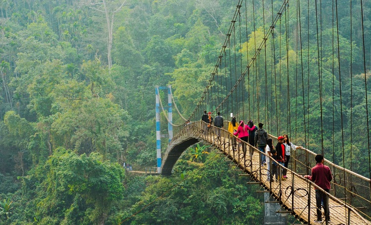

Shillong
Shillong is known as the Scotland of the East, a dreamy hill station in Meghalaya, and a lesser known gem of India’s wild and unspoilt Northeast region. Meghalaya literally translates to the abode of clouds. Morning mists, scented pine forests, and rushing waterfalls add to the romantic appeal of this green, picturesque location.
Shillong is situated at the centre of an elevated plateau in the midst of the rolling Khasi Hills, at an average altitude of 1500 metres. Nowadays, Shillong town has a typical urban sprawl that comes hand in hand with new development. However, certain pockets of the city exude the nostalgic charm of old Catholic Churches, bungalows from the Victorian era and rambling golf courses.
Shillong enjoys a temperate climate — quite different from the rest of tropical India. Summer temperatures are never extreme. The rainy season, extending from June to September, is prone to rain and drizzle. But if you are willing to embrace the monsoon magic, Shillong in the mists has a beauty all its own.
There are many places of scenic beauty scattered in and around town. Crystal clear lakes, cascading waterfalls, and opportunities for kayaking and caving will add to the thrill factor of a trip to Shillong. Head to Umiam Lake, 17 kilometres out of town, to experience a serene, tranquil atmosphere with boating and picnicking opportunities. Shillong Peak provides a good vantage point to take in the beautiful views of town and the surrounding hilly terrain. Elephant Falls, Sweet Falls, and Spread Eagle Falls are a treat to behold and their cascading waters provide good photo opportunities.
The people of Shillong are very warm and welcoming. They embrace a more westernised culture and outlook, which may in part have been influenced by local missionary activities in the region. The local Khasi, Jaintia, and Garo people have long inhabited the Shillong region and interestingly have their own matrilineal society, native food, and culture.
To visit Shillong, is to escape into an alternative reality in India — reality that will often catch you by surprise and remind you of the West. However, dig deep below the surface of the local culture and you will discover customs, food, and a way of life that are unique and delightful.
Comments